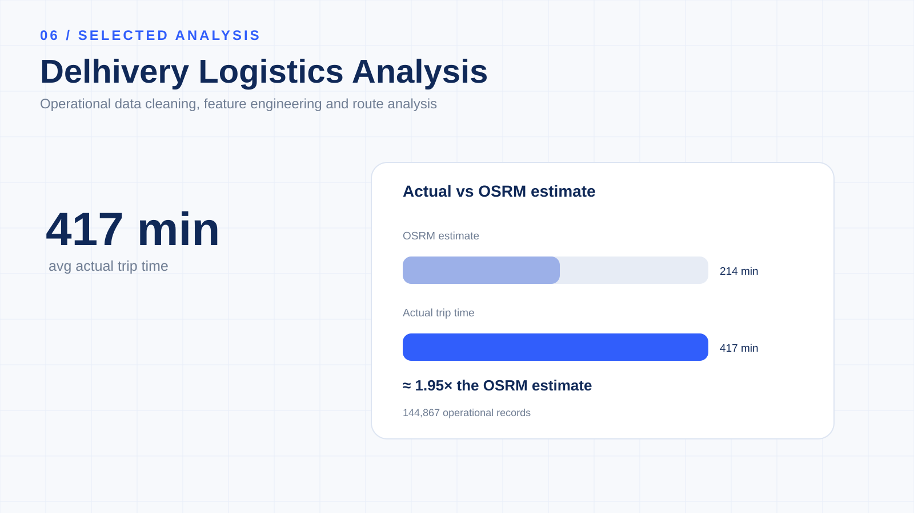

Delhivery Logistics
Data Analysis.
An end-to-end logistics analytics case study focused on data cleaning, analytical grain control, trip-level aggregation, feature engineering and comparison of observed operational performance with routing-system estimates.

Turn raw logistics records into operationally useful data.
The objective was to understand and process logistics operations data while maintaining the correct analytical grain, consolidating trip records and creating structured features for delivery-performance analysis.
144,867 operational records across 14,817 trips.
The dataset covers approximately 27 days of operations, from 12 September 2018 to 8 October 2018, and includes trip, route, centre, timestamp, distance, duration and routing-estimate fields.
Get the unit of analysis right before calculating KPIs.
Multiple operational records can belong to the same trip. The project therefore treats trip-level aggregation as a key analytical step before deriving final trip-level metrics.
Avoid duplicate trip counts
Raw operational records should not automatically be treated as independent trips.
Protect distance metrics
Aggregating at the trip level helps avoid inflated or duplicated distance calculations.
Protect time metrics
Trip-level aggregation provides a more appropriate basis for duration comparisons.
Enable route comparison
A controlled grain makes route, source and destination comparisons more meaningful.
Clean first. Engineer second.
The notebook covers dataset profiling, timestamp conversion, missing-value assessment, duplicate checks, standardisation, trip aggregation and final feature preparation.
Convert operational fields into analytical dimensions.
Geographic features
Source and destination strings are parsed into dimensions such as city, place code and state/region.
Time features
Timestamp fields are transformed into year, month, day, trip duration and operational time measures.
Duration features
Duration measures are derived from operational timestamps and compared with scan-to-scan measures for validation.
Routing comparison
Actual distance/time are compared with OSRM distance/time to examine the gap between observed operations and routing estimates.
Segment-level metrics
Segment actual time, OSRM time and OSRM distance provide additional operational context.
Geographic footprint
The dataset contains more than 1,500 source/destination logistics-centre locations for geographic analysis.
Observed operations versus routing estimates.
The central analytical comparison examines actual operational performance against OSRM routing-system estimates.
The observed gap is a descriptive finding from this dataset. It indicates that routing estimates and actual operational duration should be evaluated as separate measures when analysing delivery performance and capacity.
Time and distance tell different stories.
The analysis also shows that observed actual distance was lower than the corresponding OSRM estimate.
What the structured dataset enables.
Logistics performance
Analyse delivery duration, route performance, actual distance and actual-vs-estimated time.
Geographic analysis
Compare source regions, destination regions, city/state patterns and route-level differences.
Route analysis
Examine route type, route schedules and trip-level operational performance.
Operational KPIs
Track actual time, estimated time, actual distance, estimated distance and the gaps between them.
Understand → Clean → Aggregate → Engineer → Validate → Analyse.
The project is structured as a repeatable data-preparation and operational-analysis workflow.
Python for logistics data transformation.
The project uses Python-based data preparation and feature engineering to convert raw operational records into a structured analytical dataset.
Keep operational metrics in context.
Correct grain
Raw operational records should not automatically be treated as independent trips.
Trip identifiers
Trip-level identifiers are important for maintaining the correct analytical grain.
Actual vs OSRM
Actual and routing-system metrics represent different concepts and should be interpreted separately.
Routing estimates
OSRM estimates should not automatically be treated as operational targets.
Geographic fields
Location fields derived from semi-structured strings should be validated before detailed geographic reporting.
Descriptive evidence
The observed time and distance gaps are descriptive findings from this dataset and should not be interpreted as causal evidence.